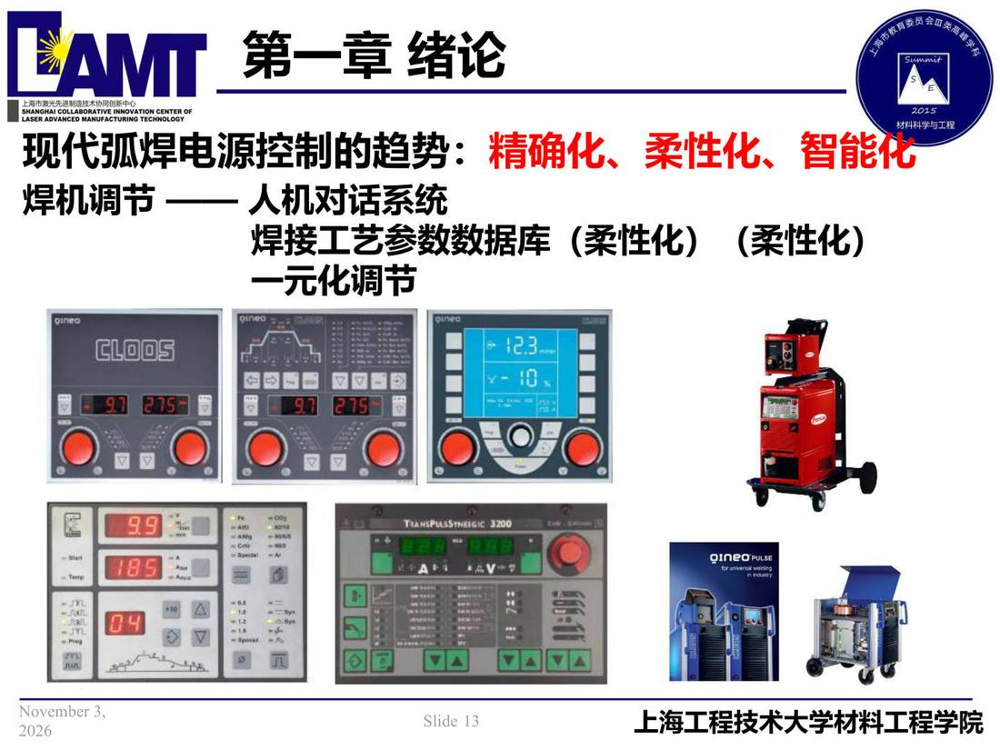

01 第1章 绪论/p013 现代弧焊电源控制的趋势
p013 现代弧焊电源控制的趋势
📄 原文：📄 弧焊电源 课件（PDF 第 13 页）（幻灯片 13/273；PDF 第 13 页）
现代弧焊电源控制的趋势

讲义原文
现代弧焊电源控制的趋势： 精确化、柔性化、智能化
焊机调节 —— 人机对话系统焊接工艺参数数据库（柔性化）（柔性化）
一元化调节
本页标红（老师强调）
- 精确化、柔性化、智能化
页面文字（OCR 机读，可能有错字，以页图为准）
现代弧焊电源控制的趋势：精确化、柔性化、智能化 焊机调节 —— 人机对话系统 焊接工艺参数数据库（柔性化）（柔性化） 一元化调节